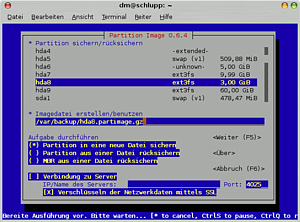
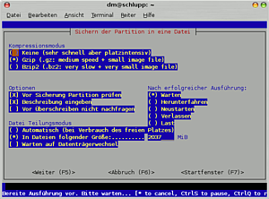
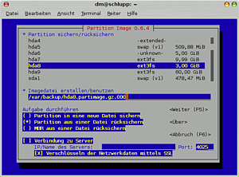
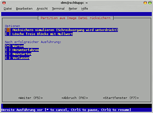

partimage
Dieser Artikel wurde für die folgenden Ubuntu-Versionen getestet:
Ubuntu 16.04 Xenial Xerus
Zum Verständnis dieses Artikels sind folgende Seiten hilfreich:
 Partimage
Partimage  ist ein Kommandozeilenprogramm, mit dem sich ganze Partitionen sichern lassen. Es werden nur benutzte Sektoren der Partition gesichert und die Daten können komprimiert werden. Die entstehenden Image-Dateien benötigen daher weniger Speicherplatz als die zu sichernde Partition selbst. Partimage eignet sich gut, um den Zustand des Systems zu einem bestimmten Zeitpunkt zu sichern und später wiederherstellen zu können. Auch Windows-Partitionen können (z.B. vor der Installation von Ubuntu) gesichert werden.
ist ein Kommandozeilenprogramm, mit dem sich ganze Partitionen sichern lassen. Es werden nur benutzte Sektoren der Partition gesichert und die Daten können komprimiert werden. Die entstehenden Image-Dateien benötigen daher weniger Speicherplatz als die zu sichernde Partition selbst. Partimage eignet sich gut, um den Zustand des Systems zu einem bestimmten Zeitpunkt zu sichern und später wiederherstellen zu können. Auch Windows-Partitionen können (z.B. vor der Installation von Ubuntu) gesichert werden.
Achtung!
Die Dateisysteme ext4 und btrfs werden nicht unterstützt! Siehe dazu auch den Abschnitt Alternativen am Ende des Artikels.
Installation¶
Das folgende Paket ist zu installieren [1]:
partimage (universe)
 mit apturl
mit apturl
Paketliste zum Kopieren:
sudo apt-get install partimage
sudo aptitude install partimage
Grundsätzliches¶
Es können nur Partitionen gesichert werden, die nicht gerade im schreibbaren Zustand verwendet werden. Eine Sicherung der Systempartition ist daher ohne weiteres nur von einem separaten Wartungssystem oder einer Live-CD aus möglich. Die Ubuntu Desktop-CD enthält Partimage nicht, es muss dort erst installiert werden. Auf der Homepage von partimage ist eine eigene Live-CD erhältlich. Auch Knoppix  ist ein Beispiel für eine Live-CD, die von Haus aus partimage enthält.
ist ein Beispiel für eine Live-CD, die von Haus aus partimage enthält.
Verwendung¶
Partimage wird im Terminal [2] verwendet, der Startbefehl lautet:
sudo partimage
Die Oberfläche wird per Tastatur bedient.
Sicherung¶
Im ersten Schritt muss zunächst mit den Pfeiltasten die zu sichernde Partition gewählt werden. Dann geht es mit Tab ⇆ weiter zur Eingabe von Ort und Name der Sicherungsdatei. Für eine externe USB-Festplatte könnte die Pfadangabe z.B. so aussehen: /mnt/sdb1/partimage.gz, wobei partimage.gz hierbei den frei wählbaren Dateinamen und die Komprimierung (gzip) angibt. Die Laufwerksbezeichnung kann aus der Auflistung der von Partimage erkannten Partitionen entnommen werden. Im Bild ist ein Beispiel für ein komprimiertes Abbild zu sehen.

Hinweis:
Wenn Knoppix benutzt wird, muss die Partition, auf der das Image gespeichert werden soll, zunächst beschreibbar gemacht werden. Das geht über das Kontextmenü der Partitionsicons auf der Arbeitsfläche.
Hinweis:
Wenn die SystemRescueCD benutzt wird, muss die Partition, auf der das Image gespeichert werden soll, zunächst eingehängt werden. Geschieht dies nicht, betreffen die Fehlermeldungen von partimage die misslungene Erstellung des temp-Files. Die Rescue-CD warnt jedoch nach dem Booten vor dem Einhängen unter /mnt und empfiehlt, vorher /mnt/mydir anzulegen. Somit würde die Pfadangabe lauten: /mnt/mydir/sdb1/partimage.gz.
Achtung!
Wegen eines Softwarefehlers in Partimage können gzip-komprimierte Archive zwar die 2-Gigabyte-Grenze beim Erstellen überschreiten, allerdings muss man vor dem Zurückschreiben diese Archive mit gunzip wieder manuell entpacken.
Weiter mit F5 . Nun kann die Komprimierungsmethode und eine eventuelle Aufteilung in mehrere kleinere Dateien eingestellt werden. Zwischen den Optionen wechselt man wieder mit den Pfeiltasten, zur Auswahl einer Option dient die Leertaste.

Weiter wieder mit F5 . Vor der eigentlichen Sicherung kann noch eine kurze Beschreibung eingegeben werden. Danach muss man einige Sekunden warten, je nach Größe der Partition. Vor Beginn der Sicherung wird noch eine Zusammenfassung mit Informationen über die Partition angezeigt. Die eigentliche Sicherung kann besonders bei Verwendung der stärkeren bz2-Kompression einige Zeit in Anspruch nehmen.
Achtung!
Wegen eines Softwarefehlers in Partimage können aus mit bzip2 komprimierten Archiven keine Master-Boot-Records (MBR) rückgesichert werden. Dies ist nur möglich, wenn das Archiv vor dem Rücksichern manuell entpackt wird.
Rücksicherung¶
Hinweis:
partimage selbst ist nicht in der Lage Partitionen zu erstellen. Möchte man in eine neue Partition rücksichern (statt eine vorhandene zu verwenden), muss diese folglich vorher erstellt werden.
Zuerst muss die wiederherzustellende Partition und die Sicherungsdatei ausgewählt werden. Diese Sicherungsdatei bekam für die Aufteilung eine zusätzliche Zahlenendung (.000), die mit anzugeben ist. Außerdem muss "Rücksicherung aus einer Datei" gewählt werden, dies erfolgt mittels Pfeiltasten und Leertaste.

Weiter mit F5 . Dann wird der Beschreibungstext der Sicherung angezeigt. Bei der Rücksicherung kann der freie Platz auf der Partition mit Nullen überschrieben werden. So werden alle zuvor auf der Partition befindlichen Daten sicher gelöscht.

Weiter mit F5 . Wieder werden erst Informationen über die Partition angezeigt, wonach dann die Rücksicherung erfolgt. Zum Schluss gibt es wieder eine Erfolgsmeldung.
Sollte das Image auf eine andere, größere Partition kopiert worden sein, hat das resultierende Dateisystem nur die Größe der Ursprungspartition. Mit resize2fs können ext2- und ext3-Dateisysteme leicht auf die gesamte Partition ausgedehnt werden:
sudo resize2fs /dev/...
Sonderfälle¶
Sicherung im Netzwerk¶
Partimage stellt auch eine Serverkomponente bereit, die es ermöglicht, Partitionen über das Netzwerk zu sichern. Dies ist zum Beispiel dann sinnvoll, wenn keine weitere Partition bzw. kein externes Laufwerk zur Verfügung steht, um die Image-Dateien aufzunehmen. Auch zur Übertragung einer Image-Datei auf mehrere Rechner eignet sich die Netzwerkkomponente. Die Daten können verschlüsselt übertragen werden.
Der Server ist dabei der Computer, der die Image-Dateien aufnehmen soll. Der Client ist der Rechner mit der zu sichernden Partition.
Vorbereitung des Servers¶
Zur Nutzung über das Netzwerk muss auf dem Server das folgende Paket installiert [1] werden:
partimage-server (universe)
mit apturl
Paketliste zum Kopieren:
sudo apt-get install partimage-server
sudo aptitude install partimage-server
Auf dem Server muss (falls nicht schon vorhanden) ein Verzeichnis angelegt werden, in dem später die Image-Dateien landen sollen:
mkdir /home/BENUTZERNAME/Zielordner
In diesem Verzeichnis muss der Benutzer partimag Schreibrechte haben, was z. B. durch die folgenden zwei Befehle erreicht werden kann [4]:
chgrp partimag /home/BENUTZERNAME/Zielordner chmod g+w /home/BENUTZERNAME/Zielordner
Die Schreibrechte für den Benutzer partimag sind notwendig, weil der Server zwar mit Root-Rechten gestartet wird, aber später mit der uid des Benutzers partimag weiterläuft. Der Benutzer partimag wird automatisch bei der Installation des Pakets partimage-server angelegt.
Außerdem muss mindestens einer der auf dem Server bereits vorhandenen Benutzer für die Benutzung des Programms partimaged (der Server-Komponente von partimage) über das Netzwerk eingerichtet werden. Dazu wird die Datei /etc/partimaged/partimagedusers mit Root-Rechten in einem Editor geöffnet [3] und der Name des Benutzers in eine neue Zeile eingetragen.
Außerdem muss die IP-Adresse des Servers ermittelt und ggf. notiert werden, z. B. durch den folgenden Befehl:
ifconfig
Server starten¶
Jetzt kann die Serverkomponente von partimage gestartet werden, und zwar mit dem Befehl
sudo partimaged
Bedienung des Clients¶
Auf dem Client muss natürlich partimage installiert sein. Die Bedienung des Clients erfolgt wie oben unter Verwendung beschrieben, nur dass die Option "Verbindung zum Server" mit den Pfeiltasten/der Leertaste ausgewählt wird und bei "IP-Adresse" die des Servers angegeben wird. Im Feld "Imagedatei erstellen/benutzen" wird das Verzeichnis aus der Sicht des Servers (ohne den Netzwerkpfad) und ein Dateiname angegeben, also z.B. /home/BENUTZERNAME/Zielordner/Zieldatei.
Nach dem Drücken von F5 erfolgt der Login auf dem Server. Dazu müssen Benutzername und Passwort desjenigen Benutzers angegeben werden, der zuvor für die Nutzung des Servers eingerichtet wurde (=dessen Benutzername in der Datei /etc/partimaged/partimagedusers eingetragen wurde).
Hinweis:
Oben wurde bereits der Hinweis gegeben, dass eine eingebundene Partition nicht mit partimage gesichert werden kann. Es muss also ggf. eine Desktop-CD verwendet werden, falls die Root-Partition von Ubuntu gesichert werden soll oder auf dem Client (noch) kein Ubuntu installiert ist.
Rücksicherung¶
Die Rücksicherung über das Netzwerk erfolgt wie unter Rücksicherung beschrieben, nur das wiederum die Netzwerkadresse eingetragen werden muss. Auf dem Rechner mit der/den Image-Dateie(n) muss dazu partimaged gestartet werden, auf dem Client partimage, ggf. von einer Desktop-CD, wenn außer dem wiederherzustellenden Betriebssystem keines vorhanden ist.
Rootpartition sichern¶
Vorgehensweise, um die Rootpartition mit Hilfe der Desktop-CD zu sichern.
Voraussetzung¶
Es wird eine zweite Partition außerhalb der Rootpartition benötigt, die genug Platz hat, um das Image der Rootpartition aufzunehmen.
Beispiel: die Rootpartition ist 25 GB groß, benutzt werden hiervon ca. 13 GB. Bei der einzigen hier möglichen Kompression (.gz) würde das Image ca. 6,7 GB groß werden.
Der Computer wird von der Desktop-CD gestartet.
Installation¶
Das folgende Paket ist zu installieren [1]:
partimage, universe
Als nächstes wird die Partition, auf die das Image gespeichert werden soll, angebunden. In diesem Beispiel wird die Partition /dev/sda2 nach /mnt angebunden:
sudo mount /dev/sda2 /mnt
Sicherung¶
Partimage wird gestartet:
sudo partimage
Hinweis:
Die weitere Vorgehensweise entspricht der oben beschriebenen zur Sicherung und Rücksicherung von NICHT-Rootpartitionen.
Verwendung mit EVMS- und Mappergeräten¶
Unter Verwendung der graphischen Oberfläche können nur "gewöhnliche" Partitionen gewählt werden, also z.B. /dev/sda8 oder /dev/sdb2. Aber auch EVMS-Volumes oder Devicemapper-Geräte (z.B. verschlüsselte Partitionen) lassen sich sichern, wenn man sie bereits auf der Kommandozeile angibt. Dabei muss der MBR bereits von der Sicherung ausgeschlossen werden (Option -M).
Hinweis:
Bei der Rücksicherung von Partitions-Images, die mit Hilfe von EVMS-Snapshots erstellt wurden, steht man vor einem Problem: Die Partitionsgrößen stimmen nicht überein. Es scheint, als könne man aber die Sicherung auf die dem evms-Volume zugrundeliegende Partition zurückspielen. Diese etwas seltsame Vorgehensweise sollte man vor ernsthafter Anwendung unbedingt selbst austesten.
Batch-Modus¶
Partimage kann auch angewiesen werden, gar keine Fragen zu stellen, so dass es im Rahmen eines Scripts eingesetzt werden kann. Die Option dazu ist -b.
Beispiel¶
Die folgende Zeile aus einem Skript sichert einen Schnappschuss der Systempartition in eine Datei, deren Name das aktuelle Datum enthält. Unter /var/backup ist ein externer Datenträger eingebunden:
partimage -Mb save /dev/evms/root-snapshot /var/backup/root_$(date --iso-8601).partimage.gz
Problembehebung¶
Beim Start von partimage erscheint unter Umständen folgende Meldung:
"/dev/dm inode nicht vorhanden"
Partimage bietet dann an, diesen anzulegen, was aber nicht funktioniert. Abhilfe kann man auf zwei Wegen schaffen:
Die einfache und tatsächlich funktionierende Variante ist: So oft ⏎ drücken, bis die Meldung verschwindet. partimage ist im Normalfall problemlos verwendbar.
Die eigentliche, korrekte Vorgehensweise verlangt nach folgendem Befehl im Terminal [2]:
sudo mknod -m 644 /dev/dm b 240 0
Um das Problem dauerhaft zu beseitigen, ist folgender Eintrag in der Datei /etc/rc.local nötig:
mknod -m 644 /dev/dm b 240 0
Alternativen¶
Mit Hilfe des Befehls dd (Disk Dump) können ebenfalls komplette Partitionen oder Festplatten gesichert bzw. geklont werden.
Das Programm fsarchiver ermöglicht das Kopieren von Partitionen auf Dateiebene. Anders als partimage kann fsarchiver auch mit dem Dateisystem ext4 umgehen.
Eine weitere Alternative ist PING
(steht für "partimage is not ghost" und ist nur namentlich mit partimage verwandt). Das Projekt hat eine ausführliche Anleitung mit Screenshots.
SystemRescueCD - diese Linux Live-CD enthält viele Werkzeuge wie GParted, partimage und vieles mehr.
Wer eine einfach zu bedienende Komplettsammlung zur Datensicherung und weiteren Werkzeugen auf Live-CD sucht, sollte sich auch Redo Backup and Recovery
anschauen.
Links¶
Parted Magic - weitere Live-CD mit Partimage
Clonezilla
- Sichern und Wiederherstellen von Partitionen und/oder FestplattenPartitionen sichern und wiederherstellen
- LinuxUser, 05/2007
- Erstellt mit Inyoka
-
 2004 – 2017 ubuntuusers.de • Einige Rechte vorbehalten
2004 – 2017 ubuntuusers.de • Einige Rechte vorbehalten
Lizenz • Kontakt • Datenschutz • Impressum • Serverstatus -
Serverhousing gespendet von